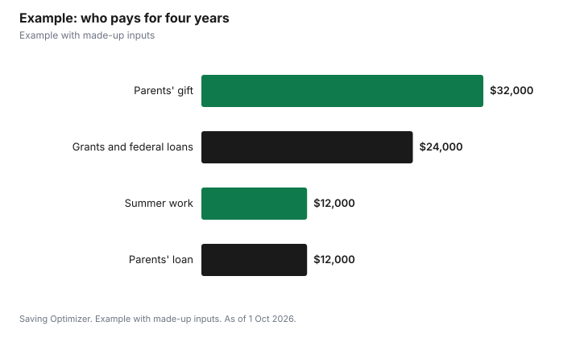

Education · Canada
Paying for an Adult Child's University: Gift or Loan?
For most Canadian families, the simplest way to help an adult child with university is a gift: the Canada Revenue Agency lists most gifts among amounts you do not report or pay tax on. Paying tuition, rent or books directly is a common form of that gift. A loan can make sense if you want the money back or want to treat siblings equally, but write it down and set real repayment terms. The Income Tax Act's attribution rules mostly target income earned on money moved to a spouse or a child under 18; for adult children, a low-interest or interest-free loan can attract attribution only when one of the main reasons was to shift investment income for tax purposes. Also ask your child to transfer unused tuition amounts, up to $5,000 federally, to you.
Key takeaways
- CRA lists most gifts and inheritances as amounts not reported or taxed.
- Attribution under s. 74.1(2) covers transfers and loans to children under 18, not adults.
- For adults, s. 56(4.1) can apply to loans made mainly to shift income for tax reasons.
- A student can transfer up to $5,000 of the year's federal tuition amount to a parent or grandparent.
- Gifting a set amount caps your cost; co-signing makes you liable for the whole balance.
- Example with made-up inputs: a family plan for four years.
Gift, loan or co-sign: the trade-offs
| Approach | Tax notes | Risk to parent | Best for |
|---|---|---|---|
| Gift | Most gifts are not reported or taxed | Limited to what you give | Families who do not need the money back |
| Paying bills directly | Same as a gift | Same as a gift | Making sure money goes to school costs |
| Family loan | Watch s. 56(4.1) if the child invests the money | Child may not repay | Large amounts, fairness among siblings |
| Co-signing bank credit | None for the parent | Whole unpaid balance | Covering a gap after government aid |
How the attribution rules work
Attribution rules decide whose tax return reports income earned on money that one family member gives or lends to another. Subsection 74.1(2) of the Income Tax Act applies when an individual transfers or lends property to a non-arm's-length person under 18, such as their child, or to a niece or nephew under 18: income from that property is taxed in the hands of the person who gave it. Once a child is 18 or older, that rule no longer applies to new gifts. For loans, subsection 56(4.1) can still attribute income to the lender when the borrower does not deal at arm's length and it can reasonably be considered that one of the main reasons for the loan was to reduce or avoid tax by moving income to the borrower. Money spent on tuition, rent or books earns no income, so these rules matter mainly if your child invests the money instead of spending it. If you plan large transfers for investing, get advice from a tax professional.
Making a family loan work
- Write it down: amount, repayment start, monthly payment and what happens if your child leaves school or loses a job.
- Decide on interest. It is your choice for money spent on school; if your child will invest the money, ask a tax professional about the prescribed rate and s. 56(4.1).
- Keep records of payments, since the loan may matter for estate planning or fairness among siblings.
- Consider forgiving part of the loan on graduation as a planned gift.
- Be realistic: a loan that you would never enforce is really a gift.
Do not skip government aid
Before paying or lending large amounts, have your child apply for government student aid. Canada Student Loans have accumulated no interest since 1 April 2023 and come with the Repayment Assistance Plan. An interest-free federal loan, repaid later from your child's earnings, can leave your own money working for you, for example in your retirement savings. Student aid applications may ask about family contributions or support, so answer them accurately.
Transferring tuition amounts to a parent
Your child must first use their tuition amount to reduce their own tax to zero. The CRA says they can then transfer up to $5,000 of the current year's federal tuition amount, minus what they used, to a parent or grandparent, plus the applicable provincial or territorial amount where available. Your child designates you and calculates the transfer on Schedule 11 and the transfer section of their tuition certificate, and you claim it on line 32400. They must file a return even if they owe no tax. Any amount carried forward instead cannot be transferred later. See the related guide on transferring tuition to a parent.
Co-signing versus gifting
If your child needs bank credit, co-signing makes you a joint borrower, equally responsible for the whole unpaid balance, according to the Financial Consumer Agency of Canada. A fixed gift has a known ceiling. Some families combine the two: a smaller line of credit with a parent co-signing, plus a set yearly gift. See the related co-signing guide for the risks.
Treating siblings fairly
Families with more than one child often worry about fairness: one child goes to a four-year program away from home, another takes a two-year diploma or works. Options include giving each child the same amount to use for school or a first home, recording larger gifts as loans to be forgiven later, or adjusting a will. Write down what you decide and tell your children, so expectations are clear.
Example with made-up inputs
These numbers are an example with made-up inputs. The Chens want to help their daughter, 19, with a four-year degree costing a made-up $20,000 a year including residence. She receives $6,000 a year in grants and interest-free federal loans and earns $3,000 in summer work. The parents gift $8,000 a year, paid directly to tuition and residence, and lend $3,000 a year interest-free, with a written agreement that repayment starts one year after graduation. Over four years they gift $32,000 and lend $12,000. Each year their daughter transfers a made-up $3,500 of unused federal tuition amount to one parent.
| Source | Per year | Four years |
|---|---|---|
| Grants and federal loans | $6,000 | $24,000 |
| Summer work | $3,000 | $12,000 |
| Parents' gift | $8,000 | $32,000 |
| Parents' interest-free loan | $3,000 | $12,000 |
| Total | $20,000 | $80,000 |

Steps
- Have your child apply for student aid every year.
- Decide how much you can give without hurting your retirement.
- Choose gift, loan or both, and write down any loan terms.
- Pay school costs directly if you want the money used for school.
- Ask your child to transfer unused tuition amounts to you.
- Avoid open-ended co-signing; cap your exposure.
Common mistakes
- Draining retirement savings when interest-free government loans are available.
- Lending without writing anything down.
- Assuming attribution rules stop every family loan; they target income-shifting.
- Forgetting the tuition transfer.
- Co-signing for more than you could repay.
Related: transferring tuition to a parent and co-signing a student loan.
Sources
- Canada Revenue Agency, Amounts that are not reported or taxed, canada.ca (Wayback copy), as of 1 Oct 2026.
- Income Tax Act, R.S.C. 1985, c. 1 (5th Supp.), ss. 56(4.1), 74.1(2) and 74.5(5), laws-lois.justice.gc.ca, as of 1 Oct 2026.
- Canada Revenue Agency, Transferring and carrying forward amounts (line 32300), canada.ca (Wayback copy), as of 1 Oct 2026.
- Financial Consumer Agency of Canada, Disclosure of information to joint borrowers and Student lines of credit, canada.ca (Wayback copies), as of 1 Oct 2026.
- Family amounts in the example are made-up inputs.
Frequently asked questions
Is a gift to my adult child taxable in Canada?
The CRA lists most gifts and inheritances among amounts that are not reported or taxed.
Do attribution rules apply to gifts to adult children?
Subsection 74.1(2) applies to transfers and loans to children under 18. For adults, s. 56(4.1) can apply to loans made mainly to shift income for tax reasons.
Should I charge interest on a loan to my child for tuition?
It is your choice when the money is spent on school. If your child will invest the money rather than spend it on school, ask a tax professional about s. 56(4.1).
Can my child transfer tuition credits to me?
Yes. Up to $5,000 of the current year's federal tuition amount, minus what they use, can go to a parent or grandparent using Schedule 11.
Is it better to co-sign or gift?
A gift has a fixed cost. Co-signing makes you responsible for the whole unpaid balance.
Should my child still apply for student loans?
Yes. Canada Student Loans accumulate no interest since 1 April 2023.
Researched and drafted with AI assistance and fact-checked against official Canadian sources. How we create content.
Disclosure: Saving Optimizer may earn a commission if a partner link is added later. No partnership is claimed on this page. Education only.